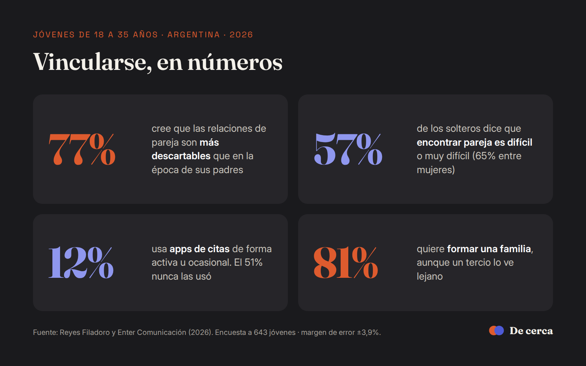

Descifrar · Nota informativa
El 77% de los jóvenes argentinos cree que las relaciones de pareja son más descartables que antes
Un informe de Reyes Filadoro y Enter Comunicación relevó a 643 personas de entre 18 y 35 años. Casi seis de cada diez solteros dicen que encontrar pareja es difícil, y apenas el 12% usa aplicaciones de citas.

Casi ocho de cada diez jóvenes argentinos de entre 18 y 35 años consideran que las relaciones de pareja son hoy más descartables y menos duraderas que en la época de sus padres. El dato surge de un informe elaborado por las consultoras Reyes Filadoro y Enter Comunicación, difundido a mediados de agosto, que combinó una encuesta a 643 jóvenes de todo el país con seis grupos focales y el análisis de conversaciones en YouTube e Instagram.
Buscar pareja, una tarea cuesta arriba
Entre quienes están solteros, el 57% afirma que encontrar pareja es difícil o muy difícil, mientras que solo el 15% lo considera fácil. Otro 28% directamente no está buscando una relación.
La percepción de dificultad es mayor entre las mujeres. El 65% dice tener problemas para encontrar pareja, y una de cada cuatro solteras asegura que no sabe dónde ni cómo salir a buscar. Entre los varones, esa respuesta baja al 5%.

Las apps no son la salida
El estudio desarma una idea extendida, la de que las aplicaciones de citas dominan la búsqueda de pareja. Solo el 12% de los consultados las usa de forma activa u ocasional y un 17% las usó en el pasado, mientras que el 51% nunca las descargó. El uso es casi el doble entre varones (15%) que entre mujeres (8%).
Los grupos focales explican parte del fenómeno. Tener más opciones no facilita sostener un vínculo.
«Mientras más tenés para elegir, más miedo te da equivocarte»Participante de uno de los grupos focales del estudio
Esfuerzo, redes y ansiedad
El 72% de los encuestados coincidió en que vincularse afectivamente exige mucho esfuerzo emocional, y el 57% sostuvo que las redes sociales volvieron más difíciles las relaciones entre hombres y mujeres. En el plano emocional, el 44% asocia su vida afectiva a sentimientos negativos. En la franja de 25 a 35 años, esa cifra trepa al 55%, con predominio de frustración, estrés y ansiedad.


Una brecha de comprensión
El informe también detectó una diferencia marcada en cómo se perciben mutuamente varones y mujeres. El 73% de los hombres dice sentirse comprendido por las mujeres, pero solo el 53% de las mujeres afirma sentirse comprendida por los hombres. A la vez, el 80% de los consultados reconoce que a muchos varones les cuesta expresar emociones o pedir ayuda por los mandatos sobre cómo deben comportarse.
El deseo de formar una familia sigue en pie
Pese al diagnóstico, el 81% de los jóvenes dijo que le gustaría formar una familia, aunque un tercio lo ve como un proyecto lejano. Para el psicólogo Carlos Trujillo, consultado por el diario misionero Primera Edición, «hoy en el mundo lo que plantea dificultad es el encuentro».

La encuesta se realizó en junio de 2026, con un margen de error de 3,9 puntos porcentuales y un nivel de confianza del 95%.
Fuentes
Nota de Perfil sobre el informe de Reyes Filadoro y Enter Comunicación, publicada el 15 de agosto de 2026.
Entrevista de Primera Edición al psicólogo Carlos Trujillo, publicada el 7 de septiembre de 2026.